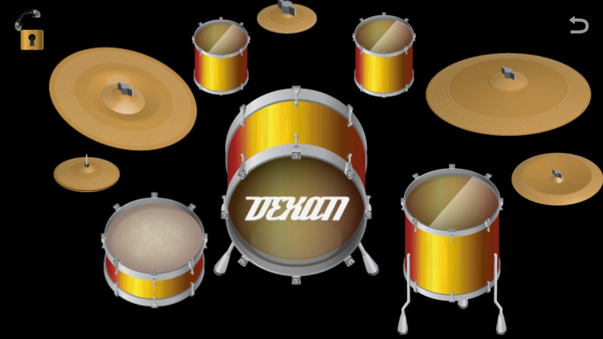

Virtual Drum Kit
A drum set – also called a drum kit, trap set (an abbreviation of the word "contraption") or simply drums – is a collection of drums, cymbals and other percussion instruments, which are set up on stands to be played by a single player, with drumsticks held in both hands and the feet operating pedals that control the hi-hat cymbal and the beater for the bass drum. A drum kit consists of a mix of drums (categorized classically as membranophones, Hornbostel-Sachs high-level classification 2) and idiophones – most significantly cymbals, but can also include the woodblock and cowbell (classified as Hornbostel-Sachs high-level classification 1). In the 2020s, some kits also include electronic instruments (Hornbostel-Sachs classification 53). Also, both hybrid (mixing acoustic instruments and electronic drums) and entirely electronic kits are used. All of this has been achieved through React JS by providing a link between sounds and keys pressed on keyboard